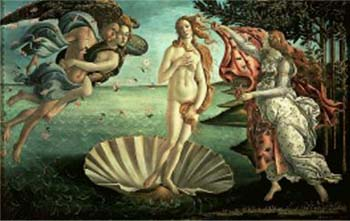

Afrodita, kavijar, čvarci
petek, 5. maj 2006. u 11:39 AM
Piše: La Lara
Rubrike: Gastronomija/Enologija | Lifestyle | Umetnost/Arts
O kavijaru, shvatila sam, znam onoliko koliko i o Krajišniku, Kršljaninu i skrivenim Koštuničinim vrlinama i talentima. Ništa. Samo što me kavijar, ipak, malo više interesuje.
Izabela Aljende u knjizi 'Afrodita' koju upravo čitam uspeva da nađe afrodizijake (i prehrambenu mitologiju) tamo gde ih većina ljudi ne bi ni u nevolji tražila: Maline, jagode, orasi, bademi, većina morskih stvorenja, jaja, med, avokado, vino i sve tako do nekih 350 strana, sve sa opisima, pričama, ličnim iskustvima i sl.
Kavijar je, naravno, uključen u ovaj popis (mada mi se čini da osim brokolija i možda mleka I. A. sve uključuje, u raznim oblicima).
Evo šta kaže Afrodita:
"Kavijar je jedan od najskupljih afrodizijaka na svetu, skoro koliko i lastavičja gnezda, čuvena u Kini. Dobija se od ženke (logično) štirjuna, ne centuriona, kako sam mislila u mladosti. Ta riba hladnih mora, jedna od najstarijih životinja na planeti, obično je dugačka i do četiri metra. Cena kavijara varira u zavisnosti od njegovog kvaliteta, koji se opet meri njegovom retkošću, u skladu sa prirodnim zakonom da nešto utoliko više želimo ukoliko ga teže dobijamo. Najveća jajašca, zvana beluga, najskuplja su i dolaze od najvećih ženki.
Najkvalitetnija beluga je praktično nepoznata izvan granica Rusije, a svu je potamani politička elita i balet Boljšoj."
Nepoznate reči i koncepti: Neko stvarno jede lastavičja gnezda? To je neka metafora?
Šta je štirjun? Šta je centurion?
U svakom slučaju, pre kavijara biće na žurci sutra duvan čvarci, koji su još poznati i kao srpski kavijar od svinje, kako to već Todor ume da sroči ili(ti) opeva.
* * *
Ko je Afrodita?
"Nije posao prefinjene boginje Afrodite da se meša u krvave bitke. U srcima bogova i smrtnika ona budi ljubav. Zahvaljujući tome ona vlada celim svetom. Niko ne može da izbegne njenu vlast, pa čak ni bogovi. Samo ratnica Atena, hestija i Artemida nisu potčinjene njenoj moći. Visoka, stasita, nežnog lica, s blago talasastom zlatnom kosom, koja kao venac obavija njenu prelepu glavu - Afrodita je ovaploćenje božanske lepote i mladosti koja ne vene. Kad hoda u sjaju svoje lepote, u mirisavim haljinama, sunce jače svetli, a cveće bujnije cveta. kada ide kroz gustu šumu zveri joj jure u susret, a jata ptica lete prema njoj. lavovi, panteri, risovi i medvedi krotko joj se umiljavaju. Mirno ide Afrodita među divljim zverima, ponosna na svoju blistavu lepotu. Njene su pratilje ore i harite, boginje lepote i ljupkosti. One oblače boginju u raskošne haljine, češljaju joj zlatnu kosu, ukrašavaju joj glavu sjajnom dijademom.
Uranova kći Afrodita rođena je iz snežnobele pene morskih talasa kraj ostrva Kifere. Laki, umilni povetarac doneo ju je na ostrvo Kipar. Tamo su mlade ore okružile boginju ljubavi, koja je izašla iz morskih talasa. Obukle su je u haljine protkane zlatom i ukrasile je vencem mirisavog cveća.
Svuda gde je Afrodita kročila raslo je bujno cveće. Vazduh je bio ispunjen mirisom. Eros i Himerot (bog strasne ljubavi) poveli su divnu boginju na Olimp. Bogovi su je gromko pozdravili. od tog doba među bogovima Olimpljanima živi zlatna Afrodita, večno mlada, najlepša među boginjama."
Više o celoj grčkoj mitologiji, ovde.
Komentari
Rano sam naučio da čitam, ali neke reči sam dugo pogrešno čitao. Pa mi je malo bilo neobično što se bogataši toliko prže na ajvar. Ekscentrici!
siboney | 05.05.06 12:38
prvo: hoću tu knjigu; drugo: ... hm, nema drugo. ho-ću knji-gu.
 Ljubar | 05.05.06 13:08
Ljubar | 05.05.06 13:08
kavijar, bljak ;)
 nemiri | 05.05.06 17:25
nemiri | 05.05.06 17:25
Ja bih rekao da je štirjun - jesetra, od koje se, ako se dobro sećam i dobija kavijar. 'Sturgeon' je engleska reč za jesteru, prilično slično 'štirjunu'. A beluga kavijar se zove po ribi od koje se dobija - beluga, takođe vrsta jesetre.
 ubipacijentic | 05.05.06 19:46
ubipacijentic | 05.05.06 19:46
Na tostu, sa malo maslaca, savrsen dorucak za zimsko subotnje jutro. Takodje izuzetan u rizotu sa lososom, ali o tome neki drugi put ;)
kiko od palube | 05.05.06 22:44
Seriously, kavijar - bljak.
FaKi | 06.05.06 04:01
Kavijar-bljak!!!
Ali oni duvan cvarci koje spominjes,e,to je vec primamljivo!!
Marina | 06.05.06 08:16
ali samo duvan chvarci! i kajmak. ili sir. Kavijar da! Hocu i ja tu knjigu)
redsandra | 06.05.06 09:37
Kako se kazu cvarci na engleskom i da li neko ima opis proizvodnje (ukratko :)) na engleskom. Ja ne umem da objasnim ovim mojim Svajcarcima. :(
 Maki | 06.05.06 17:58
Maki | 06.05.06 17:58
Na Kalenicu, u jednoj od onih boljih ribarnica, imas da kupis kladovski kavijar, jedan od najboljih na svetu. Baluga. Ovaj se pakuje u Negotinu. Kupio sam tih 50 grama kavijara za 50 evra cisto da bih se setio kako je dobar (osamdesetih se pakovanje od 160 grama prodavalo budzasto u delikatesnim radnjama). Nije stvar u tome sto je kavijar afrodizijak (nije nista vise od jaja, na primer, ako je uopste), nego sto je to velicanstvena stvar generalno. Naravno da ono sto je superukusno budi zelju za seksom, ali tu je kraj njegovog afrodizijackog dejstva. Ponekad u Merkatoru bude ruskog od lososa (taj nije tako dobar, ali je jeftiniji), pa probaj bar njega. Treba napomenuti da vestacki kavijari od morske ribe (kao danski koji se svuda prodaje), nemaju nikakve veze s pravim kavijarom od krupne recne ribe. Konkretno, od morune je najbolji.
 pavlec | 07.05.06 01:23
pavlec | 07.05.06 01:23
za koji moj se ne vidi komentar koji sam napisao teskom mukom?
 pavlec | 07.05.06 01:26
pavlec | 07.05.06 01:26
@Pavlec, stara dobra cenzura, eto sta je, cak i svoje komentare moram tek naknadno da odobravam:) Hvala na korisnim napomenama; @LJ i RedS, knjiga nije moja, dobila na citanje iz poznate knjizare; @Maki, no clue, mada znam da se Feisty svojevremno bavila objasnjavanjem strancima sta je to
la lara | 07.05.06 08:08
Najslicnija stvar cvarcima koju sam ja probao je neka vrsta pastete, rillette, popularna na jugu Francuske. Naravno, slicnost je samo u ukusu, forma je potpuno drugacija. Cvarci za premijera!
kiko | 07.05.06 12:16
ali lastavichja gnezda?!
 loonah | 07.05.06 21:44
loonah | 07.05.06 21:44
Loonah, samo cu ti reci da sam dalje u knjizi pročitala kako su i osinja gnezda sa afrodizijačkim svojstvima!?!
La Lara | 09.05.06 10:16
Ljudi, lastavicija gnezda nisu nikakva gnezda, to je samo ime jela.
Feisty Kića | 14.05.06 09:41
 RSS feed
RSS feed
 sadržaji se objavljuju pod
sadržaji se objavljuju pod
naučih ponešto o kavijaru, ma da ga baš i ne mirišem ... lijepo vam je ovdje ... uživaj ...:)))
freestyler | 05.05.06 12:25